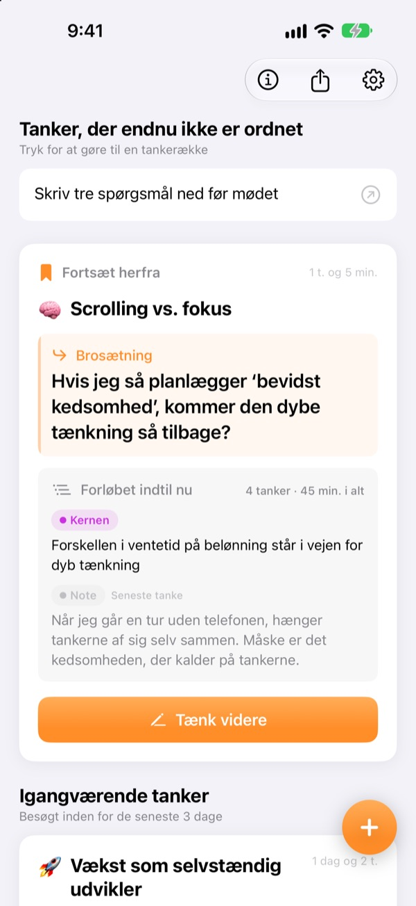
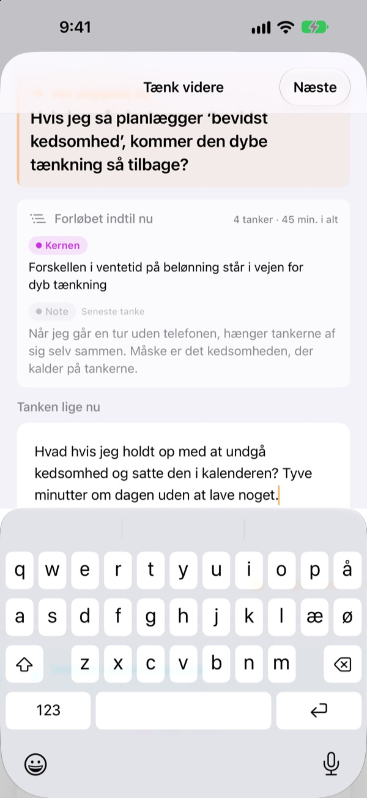
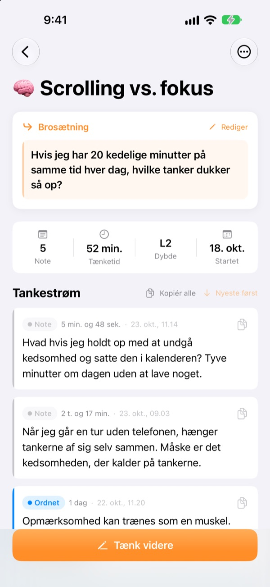
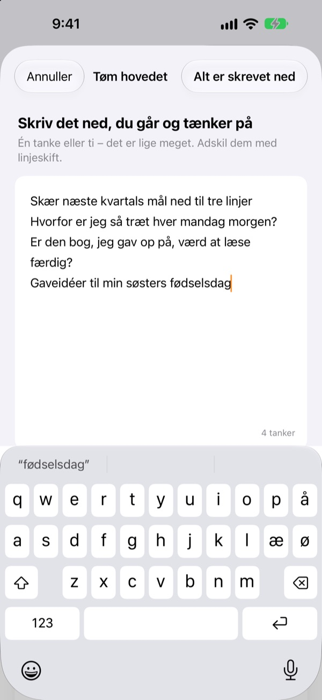

Gårsdagens halve tanke
fortsætter i dag, hvor den slap
Når du holder op med at tænke, efterlader du én linje at fortsætte fra. Næste gang du åbner appen, venter den øverst.
Alle funktioner er gratis. Ingen konto, alt bliver på din enhed.

Prøv at efterlade en brosætning
Skriv en tanke, og efterlad den sætning, du vil fortsætte fra næste gang. Det foregår i samme rækkefølge som i appen.
Hvor var jeg nu henne?
Du åbner en note fra sidste uge og finder et par konklusioner, men ikke det spørgsmål, du ville have kigget på bagefter. Så du starter forfra. ThinkFlow får dig til at skrive det næste spørgsmål ned, når du stopper, så du begynder lige der, når du vender tilbage.
Din brosætning venter øverst
Slut en tænkerunde med én linje: spørgsmålet, du fortsætter med. Når du vender tilbage, står den sætning, kernen indtil nu og din seneste tanke på ét kort. Der er intet at stykke sammen.
Du ser den også i en widget på hjemmeskærmen, og mens du tænker, kører tiden på låseskærmen og i Dynamic Island.

Fra note til kerne
Løft hver tanke gennem fire niveauer: note, ordnet, kernen og resumé. Du ser med det samme, hvor moden den er.
Det, du har søgt eller spurgt om, vedhæftes som materiale, adskilt fra dine egne tanker.

Tøm hovedet først
Skriv alt ned, der kører rundt i hovedet, én linje pr. tanke, og vælg den, du vil arbejde med nu. Den bliver til en tråd, resten venter på forsiden, til du trykker på det.
Tanker, du ikke har rørt i over tre dage, samles under Tanker at vække til live.

Kom i gang i tre trin
- 1
Tøm hovedet
Én linje pr. tanke, og vælg så den, der skal vokse.
- 2
Tænk videre
Tilføj hver ny idé for sig, så er den nemmere at finpudse senere.
- 3
Efterlad sætningen og luk
Næste gang starter du lige der.
Udfinningsniveau
- Note
- Rå tanke
- Ordnet
- Ordnet én gang
- Kernen
- Kun kernen
- Resumé
- Endeligt resumé
Tryk på niveaumærket ved en tanke for at ændre det. Kerne og resumé vises først på kortet, når du vender tilbage.
Din brosætning venter øverst
Skal jeg skrive en brosætning?
Hvis du har tilføjet noget, ja: Skærmen Tænk videre lukker først, når du efterlader den næste linje. Har du ikke skrevet noget, kan du bare lukke den. Tricket er at stoppe, mens du stadig har noget at sige, ikke når du sidder fast.
Hvad er Tanker at vække til live?
Tråde, du ikke har åbnet i over tre dage, samles for sig på forsiden, så en næsten glemt tanke kan fortsætte fra sin brosætning.
Hvordan melder jeg en fejl eller foreslår noget?
Brug Send feedback i appens indstillinger, skriv til adressen nedenfor, eller opret et issue på github.com/M1zz/ThinkFlow/issues. Alt er velkomment.
Er det virkelig helt gratis?
Ja. Alle funktioner er gratis, uden reklamer og uden konto. “Støt udvikleren” i indstillingerne er helt frivilligt og låser ikke noget op.
Spørgsmål eller forslag? Skriv til leeo@kakao.com.